Analysis of CITE-seq data with CiteFuse
Carissa Chen1 Sharon Long2 Pengyi Yang3
Source:vignettes/citefuse.Rmd
citefuse.RmdOverview
Description
scRNA-seq has allowed us to dissect complex cell populations at the
transcriptomic level, however it lacks additional phenotypic information
such as the quantification of cell-surface proteins which is often
useful to distinguish closely related cell states (eg. in immunology).
CITE-seq uses oligonucleotide-labeled antibodies to integrate cellular
protein and transcriptomic measurements into a single-cell readout. In
this first section where we introduce single-cell multi-modal analysis,
we will learn how to pre-process and integratively explore CITE-seq data
using the CiteFuse package.
Introduction
The CITE-seq protocol involves conjugating antibodies to oligonucleotides, where each antibody is specific to a cell surface protein marker. The antibodies bind to their specific protein marker, and mRNA is lysed from the cell. Both molecular species are captured for scRNA-sequencing. In a process called ‘cell hashing’, cells are stained with sample-specific oligonucleotide-labelled antibodies (‘hashing antibodies’), thus allowing the samples to be multiplexed and sequenced in a single experiment and later traced back to their origin. Thus, allowing for high-throughput and high-dimensional multi-omic single-cell analysis.
CiteFuse is a computational framework that implements a
suite of methods and tools for CITE-seq data from pre-processing through
to integrative analytics. This includes doublet detection, network-based
modality integration, cell type clustering, differential RNA and protein
expression analysis, ADT evaluation, ligand-receptor interaction
analysis, and interactive web-based visualisation of the analyses.
In this workshop, we demonstrate the usage of CiteFuse
on a subset data of CITE-seq data from human PBMCs as an example Mimitou et al.,
2019.
Loading libraries and the data
library(CiteFuse)
library(scater)
library(SingleCellExperiment)
library(DT)
library(patchwork)
library(mclust)Here, we start from a list of three matrices of unique molecular identifier (UMI), antibody derived tags (ADT) and hashtag oligonucleotide (HTO) count, which have common cell names.
There are 500 cells in our subsetted dataset. And characteristically
of CITE-seq data, the matrices are matched, meaning that for any given
cell we know the expression level of their RNA transcripts (genome-wide)
and its corresponding cell surface protein expression. The
preprocessing function will utilise the three matrices and
its common cell names to create a SingleCellExperiment
object, which stores RNA data in an assay and
ADT and HTO data within in the
altExp slot.
lapply(CITEseq_example, dim)
#> $RNA
#> [1] 19521 500
#>
#> $ADT
#> [1] 49 500
#>
#> $HTO
#> [1] 4 500
sce_citeseq <- preprocessing(CITEseq_example)
sce_citeseq
#> class: SingleCellExperiment
#> dim: 19521 500
#> metadata(0):
#> assays(1): counts
#> rownames(19521): hg19_AL627309.1 hg19_AL669831.5 ... hg19_MT-ND6
#> hg19_MT-CYB
#> rowData names(0):
#> colnames(500): AAGCCGCGTTGTCTTT GATCGCGGTTATCGGT ... TTGGCAACACTAGTAC
#> GCTGCGAGTTGTGGCC
#> colData names(0):
#> reducedDimNames(0):
#> mainExpName: NULL
#> altExpNames(2): ADT HTOPerforming doublet detection
An important step in single cell data analysis is the removal of
doublets. Doublets form as a result of co-encapsulation of cells within
a droplet, leading to a hybrid transcriptome from two or more cells. In
CiteFuse, we implement a step-wise doublet detection
approach to remove doublets. We first identify the cross-sample
doublets, where cells from different samples are captured as a ‘single’
cell. Then, we identify within-sample doublets, where two cells from the
same sample are captured together in a droplet.
Normalisation and initial visualisation of HTO counts
The function normaliseExprs is used to scale the
alternative expression. Here, we used it to perform log-transformation
of the HTO count, by setting
transform = "log".
sce_citeseq <- normaliseExprs(sce = sce_citeseq,
altExp_name = "HTO",
transform = "log")Then we can perform dimension reduction on the HTO count
by using runTSNE or runUMAP, then use
visualiseDim function to visualise the reduced dimension
plot. Our CITE-seq dataset contain data from four samples that were
pooled before sequencing. The samples were multiplexed through cell
hashing Stoeckius et al.,
2018. The four clusters observed on reduced dimension plots equate
to the four different samples.
sce_citeseq <- scater::runTSNE(sce_citeseq,
altexp = "HTO",
name = "TSNE_HTO",
pca = TRUE)
sce_citeseq <- scater::runUMAP(sce_citeseq,
altexp = "HTO",
name = "UMAP_HTO")
p1 <- visualiseDim(sce_citeseq,
dimNames = "TSNE_HTO") + labs(title = "tSNE (HTO)")
p2 <- visualiseDim(sce_citeseq,
dimNames = "UMAP_HTO") + labs(title = "UMAP (HTO)")
p1 + p2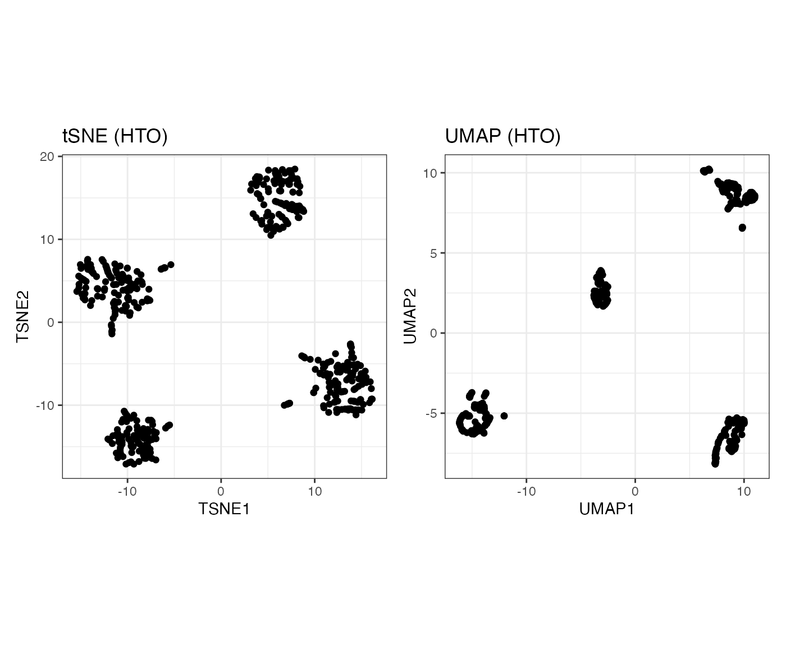
Doublet identification step 1: cross-sample doublet detection
To predict cross-sample doublets, we fit a two-component Gaussian mixture model to each log-transformed HTO count. The intersection point defined from the mixture model is used to categorize each cell in terms of whether the HTO signal is either high or low. Because a sample is stained with a hashtag that is distinctive to that sample, all cells should in theory be associated with only one HTO signal and show negligible signal of others. Therefore, any cells found to have a single high-signal HTO are considered singlets whilst those that have two or more high-signal HTOs are considered doublets or multiplets. Cells without any high-signal HTOs are considered as empty droplets.
We run crossSampleDoublets where results of the cross
sample doublets are then saved in the colData slot as
doubletClassify_between_label and
doubletClassify_between_class.
sce_citeseq <- crossSampleDoublets(sce_citeseq)
#> number of iterations= 20
#> number of iterations= 24
#> number of iterations= 46
#> number of iterations= 50
table(sce_citeseq$doubletClassify_between_label)
#>
#> 1 2 3 4
#> 115 121 92 129
#> doublet/multiplet
#> 43
table(sce_citeseq$doubletClassify_between_class)
#>
#> doublet/multiplet Singlet
#> 43 457We can then highlight the cross-sample doublets in our tSNE plot of HTO count. How would we visualise the between label and between class doublets side-by-side?
visualiseDim(sce_citeseq,
dimNames = "TSNE_HTO",
colour_by = "doubletClassify_between_label")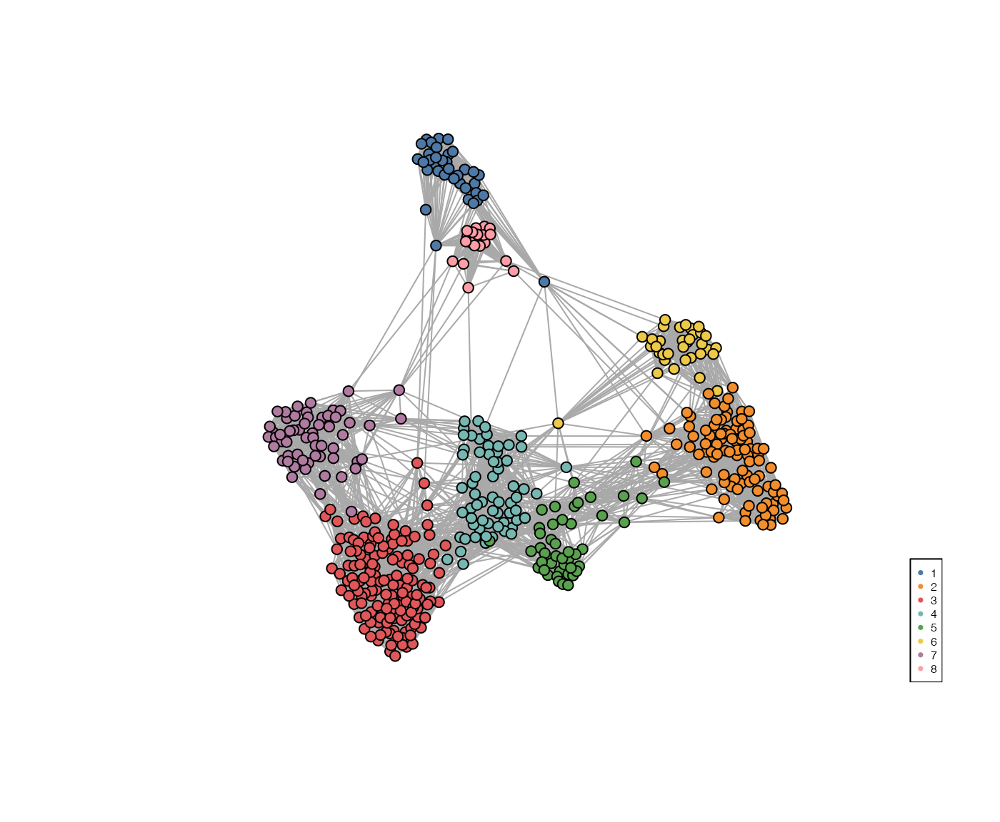
# insert code to visualise "doubletClassify_between_class"Doublet identification step 2: within-sample doublet detection
Data filtered by cross-sample doublets are next subject to within-sample doublet identification using a density-based spatial clustering and noise detection algorithm (DBSCAN) on a matrix comprising of two types of features—total unique molecular identifier (UMI) count and log-transformed HTO count. The two parameters used in the DBSCAN for this study are eps=190 and minPts=50. The smallest cluster (i.e. outliers) from DBSCAN clustering is assigned as the within-sample doublets.
We then identify the within-sample doublets via the
withinSampleDoublets function. The results of the cross
sample doublets are then saved in the colData as
doubletClassify_within_label and
doubletClassify_within_class.
Questions:
- What are the
epsandminPtsparameters? - What happens when you vary these parameters?
sce_citeseq <- withinSampleDoublets(sce_citeseq, minPts = 10)
table(sce_citeseq$doubletClassify_within_label)
#>
#> Doublets(Within)_1 Doublets(Within)_2 Doublets(Within)_3 Doublets(Within)_4
#> 3 7 4 6
#> NotDoublets(Within)
#> 480
table(sce_citeseq$doubletClassify_within_class)
#>
#> Doublet Singlet
#> 20 480Again, we can visualise the within-sample doublets in our tSNE plot. How would we visualise the within label and within class doublets side-by-side?
visualiseDim(sce_citeseq,
dimNames = "TSNE_HTO",
colour_by = "doubletClassify_within_label")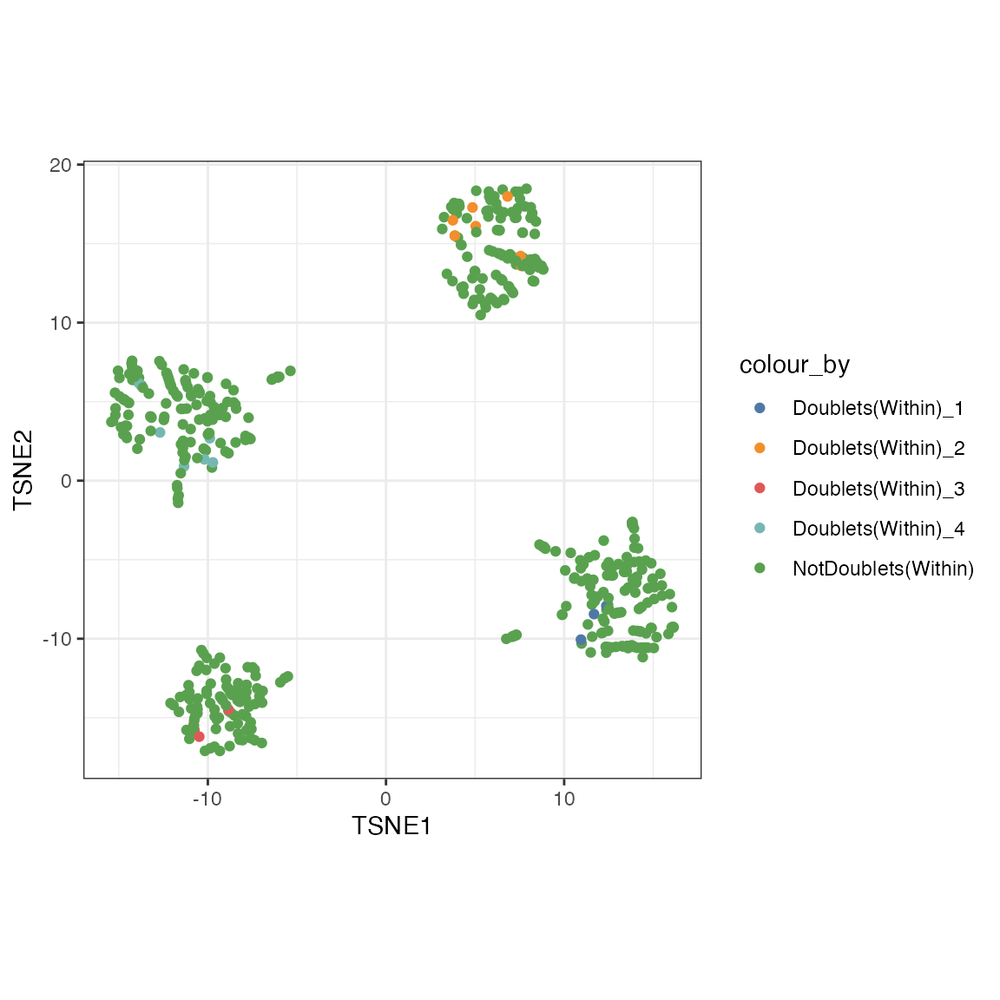
# insert code to visualise "doubletClassify_within_class"Furthermore, plotHTO function allows us to plot the
pairwise scatter HTO count. Any cells that show co-expression of
orthogonal HTOs (red) are considered as doublets. Which comparison has
the most cross-sample doublets?
plotHTO(sce_citeseq, 1:4)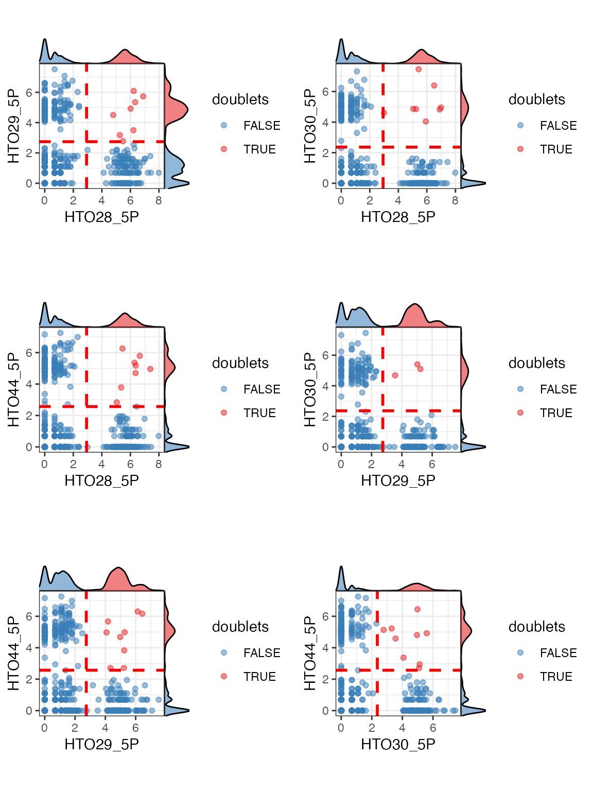
Finally, we can filter out the doublet cells (both within and between batches) for the downstream analysis.
sce_citeseq <- sce_citeseq[, sce_citeseq$doubletClassify_within_class == "Singlet" & sce_citeseq$doubletClassify_between_class == "Singlet"]
sce_citeseq
#> class: SingleCellExperiment
#> dim: 19521 437
#> metadata(3): doubletClassify_between_threshold
#> doubletClassify_between_resultsMat doubletClassify_within_resultsMat
#> assays(1): counts
#> rownames(19521): hg19_AL627309.1 hg19_AL669831.5 ... hg19_MT-ND6
#> hg19_MT-CYB
#> rowData names(0):
#> colnames(437): GATCGCGGTTATCGGT GGCTGGTAGAGGTTAT ... TTGGCAACACTAGTAC
#> GCTGCGAGTTGTGGCC
#> colData names(5): doubletClassify_between_label
#> doubletClassify_between_class nUMI doubletClassify_within_label
#> doubletClassify_within_class
#> reducedDimNames(2): TSNE_HTO UMAP_HTO
#> mainExpName: NULL
#> altExpNames(2): ADT HTOIntegration of RNA and ADT using SNF
The next step of analysis is to integrate the RNA and ADT matrix. We use a popular integration algorithm called similarity network fusion (SNF) to integrate the multi-omic data.
sce_citeseq <- scater::logNormCounts(sce_citeseq)
sce_citeseq <- normaliseExprs(sce_citeseq, altExp_name = "ADT", transform = "log")
sce_citeseq <- CiteFuse(sce_citeseq)
#> Calculating affinity matrix
#> Performing SNFWe now proceed with the fused matrix, which is stored as
SNF_W in the metadata slot of our sce_citeseq
object. We can calculate the t-SNE to generate an integrated embedding
using the SNF network.
sce_citeseq <- reducedDimSNF(sce_citeseq,
method = "tSNE",
dimNames = "tSNE_joint")How many clusters are in my data?
Clustering using Louvain clustering
As well as spectral clustering, CiteFuse can implement Louvain
clustering if users wish to use another clustering method. We use the
igraph package, and any community detection algorithms
available in their package can be selected by changing the
method parameter.
set.seed(2024)
SNF_W_louvain <- igraphClustering(sce_citeseq, method = "louvain")
table(SNF_W_louvain)
#> SNF_W_louvain
#> 1 2 3 4 5 6 7
#> 88 137 65 32 51 28 36
sce_citeseq$SNF_W_louvain <- as.factor(SNF_W_louvain)The outcome of the clustering can be easily visualised on a reduced dimensions plot by highlighting the points by cluster label.
visualiseDim(sce_citeseq, dimNames = "tSNE_joint", colour_by = "SNF_W_louvain") +
labs(title = "tSNE (SNF louvain clustering)")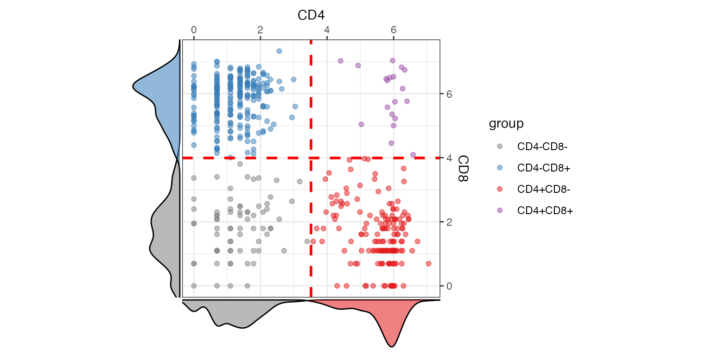
Alternatively, the clustering can be easily visualised using a KNN graph labelled by cluster number.
set.seed(2024)
visualiseKNN(sce_citeseq, colour_by = "SNF_W_louvain")
[Optional] Clustering using Spectral clustering
CiteFuse implements two different clustering algorithms on the fused
matrix, spectral clustering and Louvain clustering. First, we perform
spectral clustering with sufficient numbers of K and use
the eigen values to determine the optimal number of clusters. What is
the optimal number of clusters here?
SNF_W_clust <- spectralClustering(metadata(sce_citeseq)[["SNF_W"]], K = 20)
#> Computing Spectral Clustering
plot(SNF_W_clust$eigen_values)Using the optimal cluster number defined from the previous step, we
can now use the spectralClustering function to cluster the
single cells by specifying the number of clusters in K. The
function takes a cell-to-cell similarity matrix as an input. We have
already created the fused similarity matrix from CiteFuse.
Since the CiteFuse function creates and stores the
similarity matries from ADT and RNA expression, as well the fused
matrix, we can use these two to compare the clustering outcomes by data
modality.
SNF_W_clust <- spectralClustering(metadata(sce_citeseq)[["SNF_W"]], K = 5)
#> Computing Spectral Clustering
sce_citeseq$SNF_W_clust <- as.factor(SNF_W_clust$labels)
SNF_W1_clust <- spectralClustering(metadata(sce_citeseq)[["ADT_W"]], K = 5)
#> Computing Spectral Clustering
sce_citeseq$ADT_clust <- as.factor(SNF_W1_clust$labels)
SNF_W2_clust <- spectralClustering(metadata(sce_citeseq)[["RNA_W"]], K = 5)
#> Computing Spectral Clustering
sce_citeseq$RNA_clust <- as.factor(SNF_W2_clust$labels)Exploratory analysis of feature expression across modalities
CiteFuse has a wide range of visualisation tools to facilitate
exploratory analysis of CITE-seq data. The visualiseExprs
function is an easy-to-use function to generate boxplots, violin plots,
jitter plots, density plots, and pairwise scatter/density plots of genes
and proteins expressed in the data. The plots can be grouped by using
the cluster labels stored in the sce_citeseq object.
The expression of genes and proteins can be visualised by changing
the colour_by parameter to assess the clusters. As an
example, we highlight the plot by the RNA and ADT expression level of
CD8.
g1 <- visualiseDim(sce_citeseq, dimNames = "tSNE_joint",
colour_by = "hg19_CD8A",
data_from = "assay",
assay_name = "logcounts") +
labs(title = "tSNE: hg19_CD8A (RNA expression)")
g2 <- visualiseDim(sce_citeseq,dimNames = "tSNE_joint",
colour_by = "CD8",
data_from = "altExp",
altExp_assay_name = "logcounts") +
labs(title = "tSNE: CD8 (ADT expression)")
g1 + g2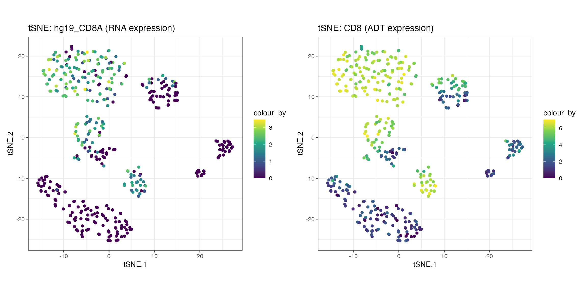
Alternative visualisation 1: We can plot a boxplot of the expression of a subset of genes per cluster detected by the louvain clustering algorithm.
visualiseExprs(sce_citeseq,
plot = "boxplot",
altExp_name = "RNA",
group_by = "SNF_W_louvain",
feature_subset = c("hg19_CD2", "hg19_CD4", "hg19_CD8A", "hg19_CD19"))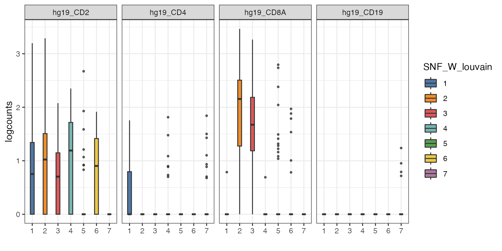
Alternative visualisation 2: We can plot a violin plot of the expression of a subset of genes per cluster detected by the louvain clustering algorithm.
visualiseExprs(sce_citeseq,
plot = "violin",
altExp_name = "RNA",
group_by = "SNF_W_louvain",
feature_subset = c("hg19_CD2", "hg19_CD4", "hg19_CD8A", "hg19_CD19"))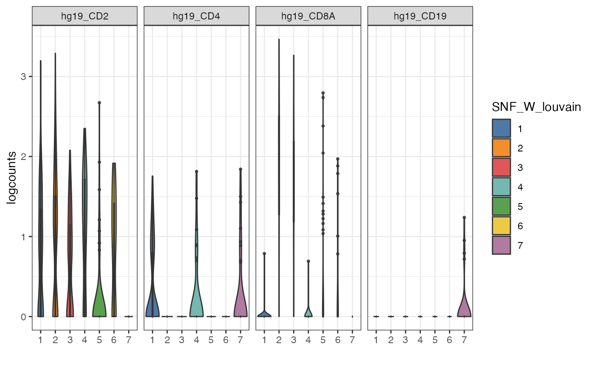
Alternative visualisation 3: We can plot a jitter of the expression of a subset of genes per cluster detected by the louvain clustering algorithm.
visualiseExprs(sce_citeseq,
plot = "jitter",
altExp_name = "RNA",
group_by = "SNF_W_louvain",
feature_subset = c("hg19_CD2", "hg19_CD4", "hg19_CD8A", "hg19_CD19"))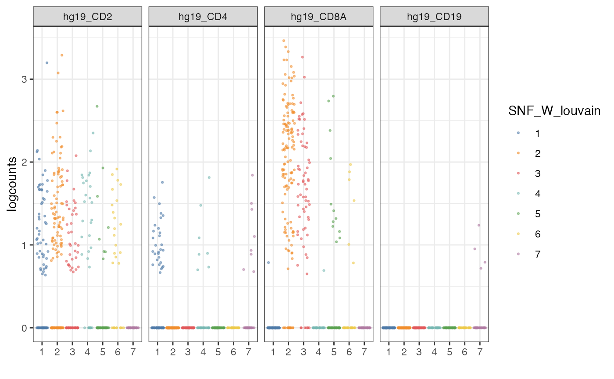
Alternative visualisation 4: We can plot a density plot of the expression of a subset of genes per cluster detected by the louvain clustering algorithm.
visualiseExprs(sce_citeseq,
plot = "density",
altExp_name = "RNA",
group_by = "SNF_W_louvain",
feature_subset = c("hg19_CD2", "hg19_CD4", "hg19_CD8A", "hg19_CD19"))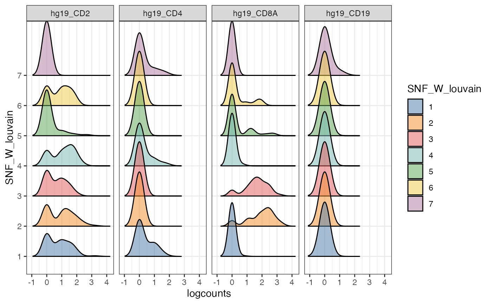
Questions:
- From these collection of visualisations, do you notice any markers that are differentially expressed in any clusters?
- How would you plot the above, but for ADT?
Alternative visualisation 5: We can also create a pairwise scatter plot to visualise the distribution of cells that are expressing certain markers.
visualiseExprs(sce_citeseq, altExp_name = "ADT",
plot = "pairwise",
feature_subset = c("CD4", "CD8"))
#> number of iterations= 19
#> number of iterations= 26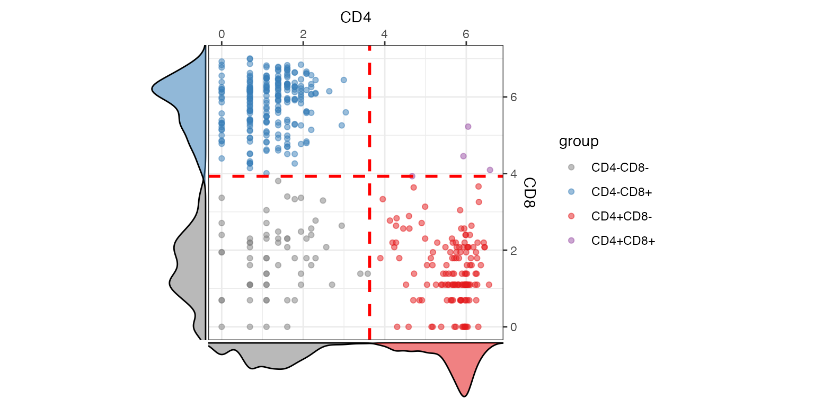
Questions:
- What do each of the quadrants correspond to?
- Do we have many cells that co-express both markers?
What genes are differentially expressed between my clusters?
Perform DE Analysis with Wilcoxon Rank Sum test
CiteFuse can also calculates differentially expressed
(DE) genes through the DEgenes function. The cluster
grouping to use must be specified in the group parameter.
If altExp_name is not specified, RNA expression will be
used as the default expression matrix.
Results form the DE analysis is stored in sce_citeseq as
DE_res_RNA_filter and DE_res_ADT_filter for
RNA and ADT expression, respectively.
For RNA modality
# DE will be performed for RNA if altExp_name = "none"
sce_citeseq <- DEgenes(sce_citeseq,
altExp_name = "none",
group = sce_citeseq$SNF_W_louvain,
return_all = TRUE,
exprs_pct = 0.5)
sce_citeseq <- selectDEgenes(sce_citeseq,
altExp_name = "none")
datatable(format(do.call(rbind, metadata(sce_citeseq)[["DE_res_RNA_filter"]]),
digits = 2))For ADT modality
sce_citeseq <- DEgenes(sce_citeseq,
altExp_name = "ADT",
group = sce_citeseq$SNF_W_louvain,
return_all = TRUE,
exprs_pct = 0.5)
sce_citeseq <- selectDEgenes(sce_citeseq,
altExp_name = "ADT")
datatable(format(do.call(rbind, metadata(sce_citeseq)[["DE_res_ADT_filter"]]),
digits = 2))Visualising DE Results
After running DE analysis, we obtain the p-value and relevant
statistics to rank our differentially expressed genes in each cluster.
To visualise a selection of top DE genes, we can use
`DEcomparisonPlot. This lollipop plot shows the -log10
transformed adjusted p-values of the specified genes in RNA and ADT in
each cluster.
It requires a list of features from both RNA and ADT that we are interested in, as well as the output from the DE analysis.
rna_list <- c("hg19_CD4", "hg19_CD8A", "hg19_HLA-DRB1", "hg19_ITGAX", "hg19_NCAM1", "hg19_CD27", "hg19_CD19")
adt_list <- c("CD4", "CD8", "MHCII (HLA-DR)", "CD11c", "CD56", "CD27", "CD19")
rna_DEgenes_all <- metadata(sce_citeseq)[["DE_res_RNA"]]
adt_DEgenes_all <- metadata(sce_citeseq)[["DE_res_ADT"]]
feature_list <- list(RNA = rna_list, ADT = adt_list)
de_list <- list(RNA = rna_DEgenes_all, ADT = adt_DEgenes_all)
DEcomparisonPlot(de_list = de_list,
feature_list = feature_list)
Interpretation:
For each louvain-generated groups, we compare the -log10 transformed p-values of RNA genes (right) and ADT markers (left). The larger the value, the more significant the p-value. From this, we can see that in cluster 7, there is the significant differential expression of MHCII and CD19. This suggests that cluster 7 are B cells, possibly a B cell subtype.
How do I analyse the RNA and ADT modalities together?
Is there a relationship between important molecular factors in RNA and ADT?
We can generate a network diagram using the
geneADTnetwork function to examine the association between
the differentially expressed genes and protein markers. We specify the
unique DE genes across all clusters from the RNA and ADT modalities and
calculate the correlation between the genes using all cells. The nodes
denote proteins and RNA whilst the edges denote positive and negative
correlation in expression.
Questions:
- Do the results change if we use a different correlation method?
- What if we vary the
cor_thresholdparameter? - How do we examine the network for a specific cluster?
RNA_feature_subset <- unique(as.character(unlist(lapply(rna_DEgenes_all, "[[", "name"))))
ADT_feature_subset <- unique(as.character(unlist(lapply(adt_DEgenes_all, "[[", "name"))))
set.seed(2024)
netw <- geneADTnetwork(sce_citeseq,
RNA_exprs_value = "logcounts",
altExp_name = "ADT",
altExp_exprs_value = "logcounts",
cell_subset = NULL,
cor_threshold = 0.5,
RNA_feature_subset = RNA_feature_subset,
ADT_feature_subset = ADT_feature_subset,
cor_method = "pearson",
network_layout = igraph::layout_with_fr)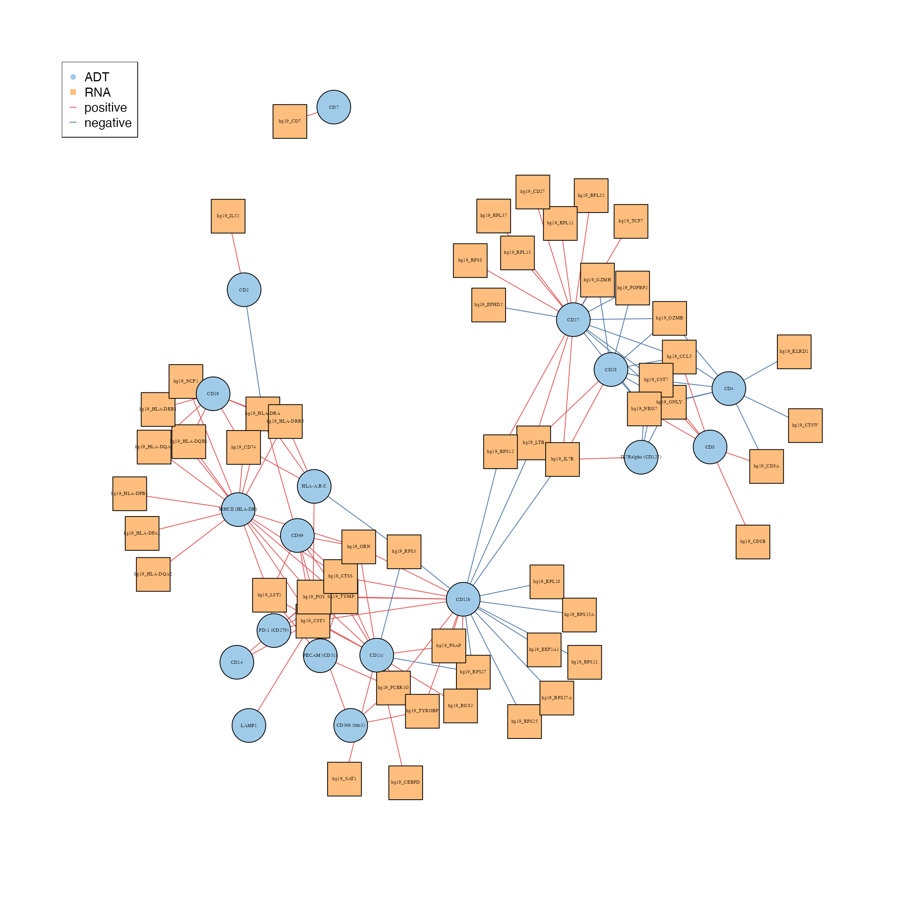
Interpretation:
There are roughly 4 groupings in the interaction network, particularly of interest, CD27 and CD11b is positively correlated with RPS and RPL ribosomal genes. This could be expected, as activated immune cells require increased ribosome biogenesis to support the immune response.
What are the ligand-receptor interactions in my data?
Ligand-receptor interactions are the means by which cells communicate with each other. Ligands (eg. hormones, neurotransmitters, growth factors etc.) bind to specific receptors on the surface of target cells, initiating intracellular signalling cascades that alter cell behaviour.
To take advantage of the ADT expression, CiteFuse implements a
ligandReceptorTest to find ligand-receptor interactions
between sender and receiver cells. Importantly, the ADT count is used to
predict receptor expression within receiver cells. Note that the setting
altExp_name = "RNA" would enable users to predict
ligand-receptor interaction from RNA expression only.
First, we load a database of known ligand-receptor interactions to query against our data.
# load the database of known ligand-receptor interactions from cellPhoneDB
data("lr_pair_subset", package = "CiteFuse")
head(lr_pair_subset)
#> [,1] [,2]
#> [1,] "hg19_IL17RA" "CD45"
#> [2,] "hg19_FAS" "CD11b"
#> [3,] "hg19_GZMK" "CD62L"
#> [4,] "hg19_CD40LG" "CD11b"
#> [5,] "hg19_FLT3LG" "CD62L"
#> [6,] "hg19_GZMA" "CD19"A key challenge in analyzing ligand–receptor interactions is the difference in scaling and distribution. Comparing unequal distributions can potentially introduce bias, especially during ligand–receptor predictions when means are compared. To address this, we first scaled each feature to a range of 0–1 through min–max normalization and then transformed the protein expression to force the low-expression values to zero.
sce_citeseq <- normaliseExprs(sce = sce_citeseq,
altExp_name = "ADT",
transform = "zi_minMax")
sce_citeseq <- normaliseExprs(sce = sce_citeseq,
altExp_name = "none",
exprs_value = "logcounts",
transform = "minMax")For each ligand–receptor interaction pair originating from a cluster expressing the ligand and another cluster expressing the receptor, a permutation test is performed on the mean of the average RNA expression from the ligand cluster and the mean of the protein expression from the receptor cluster. Only ligand–receptor pairs with a P-value of lower than 0.05 are defined as significant pairs.
sce_citeseq <- ligandReceptorTest(sce = sce_citeseq,
ligandReceptor_list = lr_pair_subset,
cluster = sce_citeseq$SNF_W_louvain,
RNA_exprs_value = "minMax",
use_alt_exp = TRUE,
altExp_name = "ADT",
altExp_exprs_value = "zi_minMax",
num_permute = 1000)
#> 100 ......200 ......300 ......400 ......500 ......600 ......700 ......800 ......900 ......1000 ......Alternative visualisation 1: To visualise the ligand-receptor predictions, we can plot a heatmap of p-values indicating significant ligand-receptor pairs between cluster groups.
visLigandReceptor(sce_citeseq,
type = "pval_heatmap",
receptor_type = "ADT")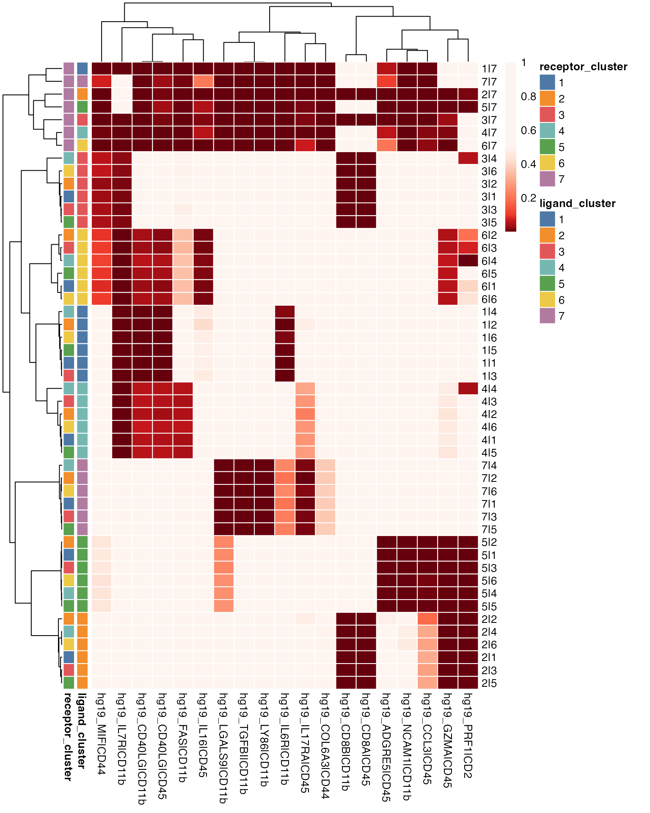
Alternative visualisation 2: Here, we plot a network graph between cluster groups, where the weight of the lines indicate the number of LR-pairs.
set.seed(2024)
visLigandReceptor(sce_citeseq,
type = "group_network",
receptor_type = "ADT")
Alternative visualisation 3: Similarly, we can visualise the above counts of LR-pairs in a heatmap.
visLigandReceptor(sce_citeseq,
type = "group_heatmap",
receptor_type = "ADT")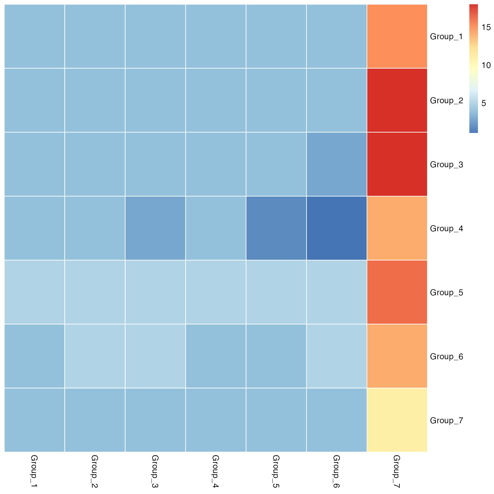
[Optional] Evaluating the importance of ADT markers in clustering
An important evaluation in CITE-seq data analysis is to assess the
quality of each ADT and to evaluate the contribution of ADTs towards
clustering outcome. CiteFuse calculates the relative
importance of ADT towards clustering outcome by using a random forest
model. The higher the score of an ADT, the greater its importance
towards the final clustering outcome.
set.seed(2024)
sce_citeseq <- importanceADT(sce_citeseq,
group = sce_citeseq$SNF_W_louvain,
subsample = TRUE)The importance scores can be visualised in a boxplot and heatmap. Our evaluation of ADT importance show that unsurprisingly CD4 and CD8 are the top two discriminating proteins in PBMCs.
visImportance(sce_citeseq, plot = "boxplot")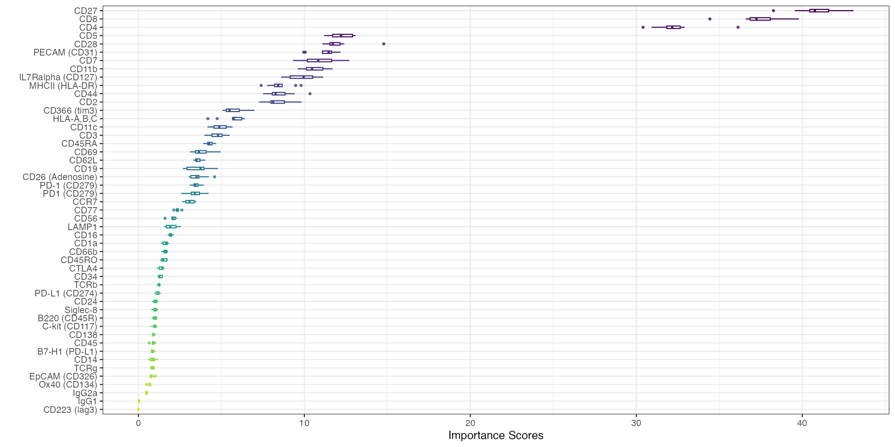
visImportance(sce_citeseq, plot = "heatmap")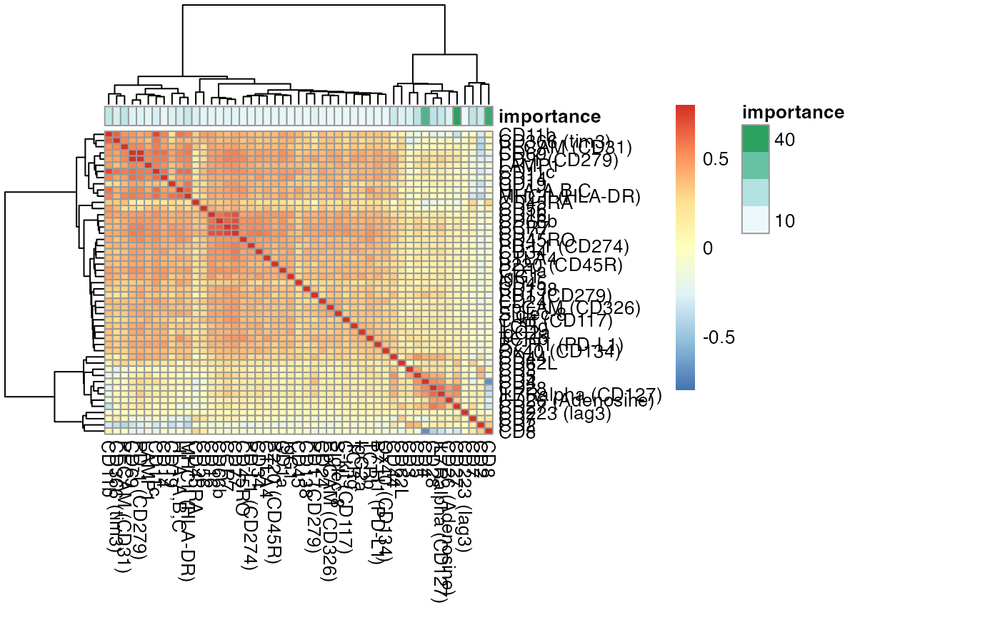
# view the top 20 markers by decreasing importance
sort(metadata(sce_citeseq)[["importanceADT"]], decreasing = TRUE)[1:20]
#> CD27 CD8 CD4 CD5
#> 40.880877 37.389624 32.358307 12.257423
#> CD28 PECAM (CD31) CD7 CD11b
#> 12.054324 11.229291 10.941676 10.603099
#> IL7Ralpha (CD127) MHCII (HLA-DR) CD44 CD2
#> 9.908142 8.508850 8.507701 8.397517
#> CD366 (tim3) HLA-A,B,C CD11c CD3
#> 5.697106 5.688288 4.906899 4.769488
#> CD45RA CD69 CD62L CD19
#> 4.279235 3.791519 3.602994 3.592245To test whether we would obtain similar clustering results by using a subset of important markers, we can try integration and clustering with only ADTs with a score greater than 5.
subset_adt <- names(which(metadata(sce_citeseq)[["importanceADT"]] > 5))
subset_adt
#> [1] "CD11b" "CD2" "CD27"
#> [4] "CD28" "CD366 (tim3)" "CD4"
#> [7] "CD44" "CD5" "CD7"
#> [10] "CD8" "HLA-A,B,C" "IL7Ralpha (CD127)"
#> [13] "MHCII (HLA-DR)" "PECAM (CD31)"
sce_citeseq <- CiteFuse(sce_citeseq,
ADT_subset = subset_adt,
metadata_names = c("W_SNF_adtSubset1",
"W_ADT_adtSubset1",
"W_RNA"))
#> Calculating affinity matrix
#> Performing SNF
set.seed(2024)
SNF_W_clust_adtSubset1 <- spectralClustering(metadata(sce_citeseq)[["W_SNF_adtSubset1"]], K = 5)
#> Computing Spectral Clustering
sce_citeseq$SNF_W_clust_adtSubset1 <- as.factor(SNF_W_clust_adtSubset1$labels)To see how well the integration performed with only a subset of ADT markers, we can calculate the concordance between the labels (ie. adjusted rand index, ARI).
mclust::adjustedRandIndex(sce_citeseq$SNF_W_clust_adtSubset1, sce_citeseq$SNF_W_clust)
#> [1] 0.8499764Interpretation:
When we compare between the two clustering outcomes, we find that the ARI is approximately 0.85, where a value of 1 denotes complete concordance. This high ARI value suggests that the top markers are the primary contributors to the biological signals in the data, significantly influencing the integration and clustering patterns.
Discussion:
- What would the concordance be if we set an even higher threshold for important ADT markers?
[Optional] Performing multi-sample analysis with
CiteFuse
Lastly, we will jointly analyse the current PBMC CITE-seq data, taken
from healthy human donors, and another subset of CITE-seq data from
patients with cutaneous T-cell lymphoma (CTCL), again from Mimitou et
al. (2019). The data sce_ctcl_subset provided in our
CiteFuse package already contains the clustering
information.
data("sce_ctcl_subset", package = "CiteFuse")To visualise and compare gene or protein expression data, we can use
visualiseExprsList function. Here, we visualise the gene
expression of a subset of genes across the two conditions and
individually for each identified cluster.
Questions:
- How would we visualise the ADT expression?
visualiseExprsList(sce_list = list(control = sce_citeseq, ctcl = sce_ctcl_subset),
plot = "boxplot",
altExp_name = "none",
exprs_value = "logcounts",
feature_subset = c("hg19_S100A10", "hg19_CD8A"),
group_by = c("SNF_W_louvain", "SNF_W_louvain"))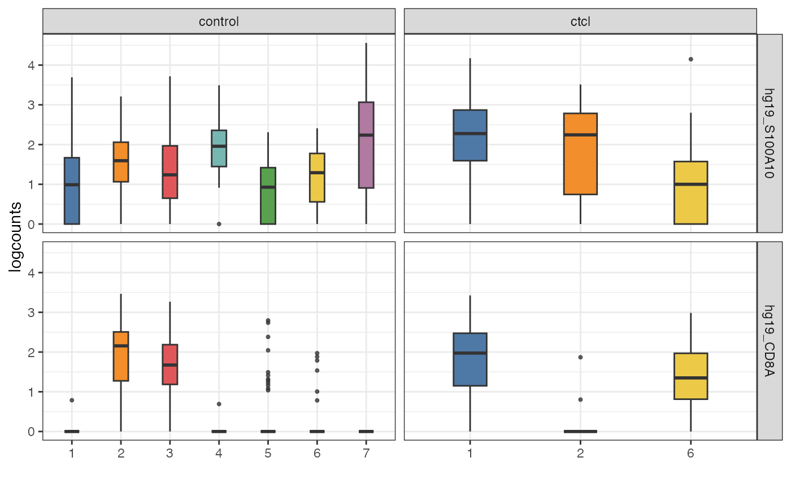
# fill in code to visualise the ADT expression of CD19 and CD8 across the conditionsWe can then perform differential expression analysis of the RNA expression level across the two clusters that have high CD19 expression in ADT. Can you gather anything biologically meaningful about the clusters from looking at the top DE genes?
de_res <- DEgenesCross(sce_list = list(control = sce_citeseq, ctcl = sce_ctcl_subset),
colData_name = c("SNF_W_louvain", "SNF_W_louvain"),
group_to_test = c("2", "6"))
de_res_filter <- selectDEgenes(de_res = de_res)
de_res_filter
#> $control
#> stats.W pval p.adjust meanExprs.1 meanExprs.2
#> hg19_GNLY 28.0 6.646869e-23 6.646869e-23 0.07220401 4.591530
#> hg19_CST7 149.5 4.403301e-21 4.403301e-21 0.22512314 2.640981
#> hg19_NKG7 165.0 8.951222e-21 8.951222e-21 0.51066894 3.815105
#> hg19_GZMH 301.0 1.984392e-19 1.984392e-19 0.00000000 1.972667
#> hg19_GZMB 474.0 3.856340e-17 3.856340e-17 0.11667246 2.017016
#> hg19_CCL5 474.0 1.010639e-16 1.010639e-16 1.04348029 3.772472
#> hg19_FGFBP2 548.0 1.623043e-16 1.623043e-16 0.03101677 1.666924
#> hg19_KLRD1 574.5 4.662465e-16 4.662465e-16 0.09327555 1.568567
#> hg19_EFHD2 794.0 5.121771e-14 5.121771e-14 0.02064028 1.212213
#> hg19_PRF1 801.5 9.024284e-14 9.024284e-14 0.06473009 1.467354
#> meanPct.1 meanPct.2 meanDiff pctDiff name group
#> hg19_GNLY 0.02325581 0.9927007 4.519326 0.9694449 hg19_GNLY control
#> hg19_CST7 0.13953488 0.9927007 2.415857 0.8531658 hg19_CST7 control
#> hg19_NKG7 0.30232558 1.0000000 3.304436 0.6976744 hg19_NKG7 control
#> hg19_GZMH 0.00000000 0.8978102 1.972667 0.8978102 hg19_GZMH control
#> hg19_GZMB 0.06976744 0.8832117 1.900344 0.8134442 hg19_GZMB control
#> hg19_CCL5 0.37209302 1.0000000 2.728992 0.6279070 hg19_CCL5 control
#> hg19_FGFBP2 0.02325581 0.8248175 1.635907 0.8015617 hg19_FGFBP2 control
#> hg19_KLRD1 0.09302326 0.8321168 1.475292 0.7390935 hg19_KLRD1 control
#> hg19_EFHD2 0.02325581 0.7372263 1.191573 0.7139705 hg19_EFHD2 control
#> hg19_PRF1 0.04651163 0.7591241 1.402624 0.7126125 hg19_PRF1 control
#>
#> $ctcl
#> stats.W pval p.adjust meanExprs.1 meanExprs.2
#> hg19_LTB 368.0 6.626368e-28 6.626368e-28 0.1049424 1.978730
#> hg19_RPS26 0.0 4.957273e-23 4.957273e-23 1.6292756 5.072471
#> hg19_IL7R 747.0 5.147332e-21 5.147332e-21 0.1597474 1.651591
#> hg19_SELL 1006.0 3.198651e-20 3.198651e-20 0.0659935 1.152572
#> hg19_LEPROTL1 699.0 1.893136e-18 1.893136e-18 0.2381900 1.300745
#> hg19_EEF1B2 512.5 3.188785e-16 3.188785e-16 1.7119640 3.043623
#> hg19_HBB 1712.5 1.982149e-15 1.982149e-15 0.0000000 0.431026
#> hg19_NOSIP 1034.0 2.135217e-14 2.135217e-14 0.2014222 1.157235
#> hg19_FOS 1278.5 1.229947e-13 1.229947e-13 0.1492607 1.125337
#> hg19_NPM1 927.0 1.013945e-11 1.013945e-11 1.1724979 2.202268
#> meanPct.1 meanPct.2 meanDiff pctDiff name group
#> hg19_LTB 0.08029197 0.9069767 1.8737878 0.8266848 hg19_LTB ctcl
#> hg19_RPS26 0.89051095 1.0000000 3.4431949 0.1094891 hg19_RPS26 ctcl
#> hg19_IL7R 0.10218978 0.8139535 1.4918432 0.7117637 hg19_IL7R ctcl
#> hg19_SELL 0.05109489 0.6976744 1.0865780 0.6465795 hg19_SELL ctcl
#> hg19_LEPROTL1 0.18978102 0.9069767 1.0625555 0.7171957 hg19_LEPROTL1 ctcl
#> hg19_EEF1B2 0.86131387 0.9767442 1.3316593 0.1154303 hg19_EEF1B2 ctcl
#> hg19_HBB 0.00000000 0.4186047 0.4310260 0.4186047 hg19_HBB ctcl
#> hg19_NOSIP 0.19708029 0.7674419 0.9558133 0.5703616 hg19_NOSIP ctcl
#> hg19_FOS 0.11678832 0.6511628 0.9760767 0.5343745 hg19_FOS ctcl
#> hg19_NPM1 0.72992701 0.9534884 1.0297701 0.2235614 hg19_NPM1 ctcl